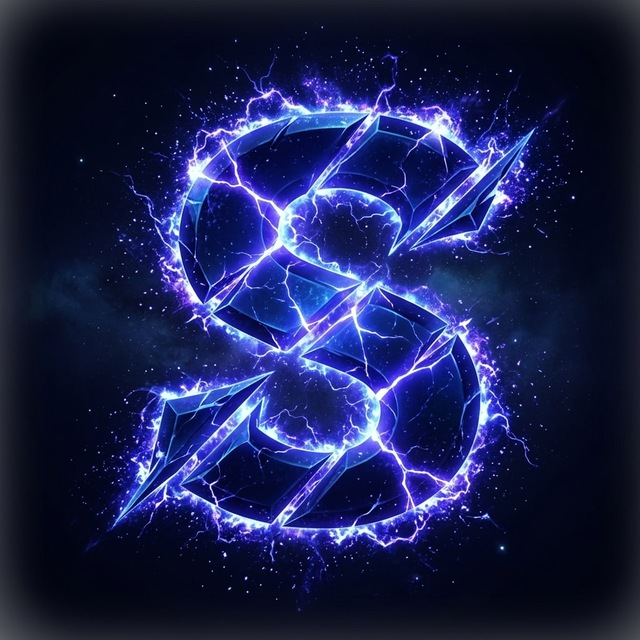
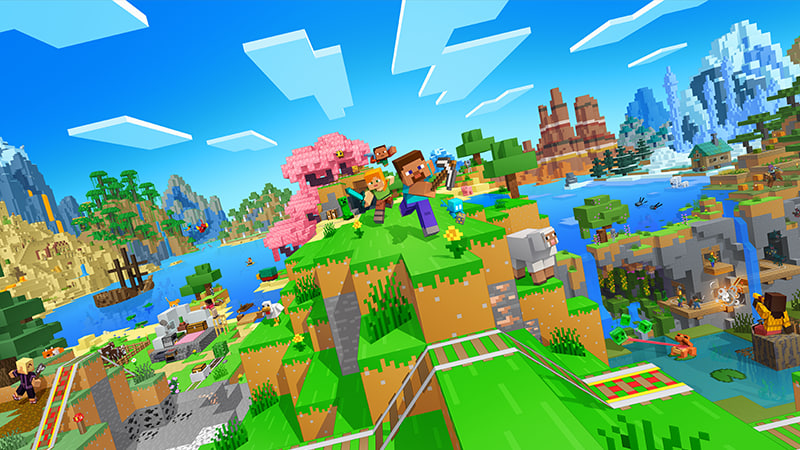
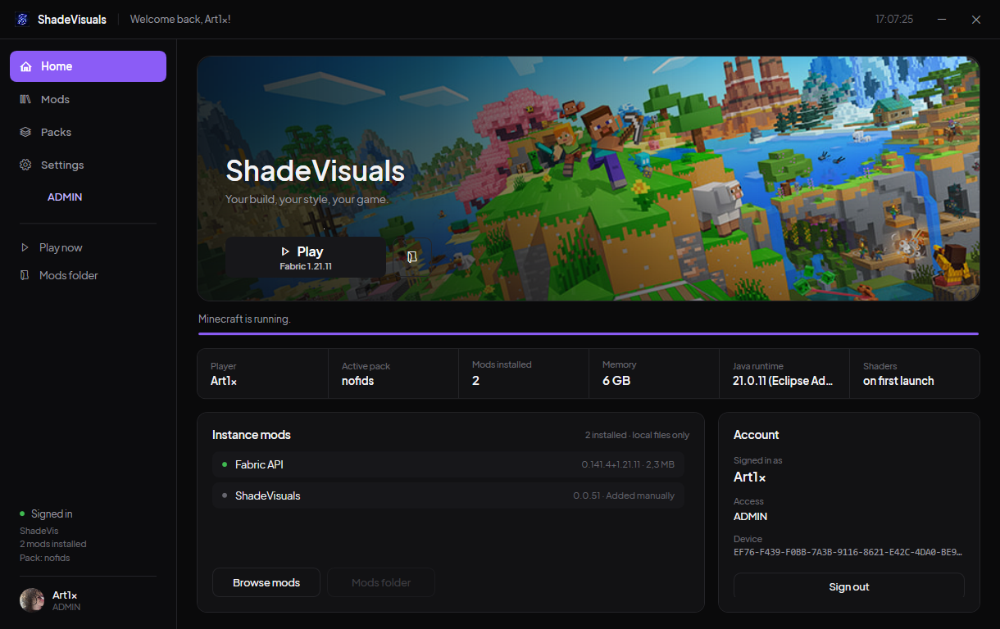

🚀
Лаунчер в комплекте
Один exe, без установки .NET и Java. Свой инстанс, свои настройки, запуск в один клик.

ShadeVisuals Получить доступShadeVisuals — визуальный клиент и лаунчер в одном флаконе. Косметика, Figura-модели, установка модов из Modrinth и вход через Microsoft — без ручной возни с папками и jar-файлами.

Всё, что нужно для игры и внешнего вида — уже собрано и настроено.
Один exe, без установки .NET и Java. Свой инстанс, свои настройки, запуск в один клик.
Поиск и установка модов прямо из лаунчера: подтягиваются зависимости, проверяется SHA-1.
Плащи, крылья, шляпы, рюкзаки, компаньоны, ножи и никнеймы-градиенты — всё в одном каталоге.
Полноценные аватары: от Akita Neru до Untitled Goose. Выбираются в лаунчере и работают в игре.
Лицензионный аккаунт подключается прямо в лаунчере — премиум-серверы тебя принимают.
Локальные аккаунты, роли Admin / Media / User и админ-панель для управления.
Тёмная тема, один экран — от входа до кнопки «Играть».

Профиль, роль, версия Fabric и кнопка запуска. Ничего лишнего.
Каталог Modrinth с сортировками и вкладкой установленных модов.
Память, папка инстанса, привязка Microsoft и устройство.
Доступ привязан к твоему ПК: одна лицензия — один компьютер.
Базовый доступ к клиенту
Всё из Classic и больше
Лицензия активируется на первом запуске и запоминает ПК. Смена железа — через поддержку.
Проверка подписки кешируется: без сети клиент работает до 12 часов, потом нужен интернет.
Один логин для лаунчера и личного кабинета. Пароль хранится только в виде хеша.
Три шага, без бубна.
Архив с shade_launcher.exe и папкой assets. Распакуй в любое место.
Ник и пароль — локально. При первом старте создаётся C:\ShadeVisuals\game со всей структурой.
Мод, Fabric и ассеты уже на месте. По желанию подключи Microsoft-аккаунт.
Нет. ShadeVisuals — визуальный клиент: косметика, интерфейс и удобный лаунчер. Игровой баланс не затрагивается.
Не обязателен — можно играть на локальном аккаунте. Но для премиум-серверов нужен вход через Microsoft, он есть в лаунчере.
Minecraft 1.21.11 на Fabric. Клиент, библиотеки и ассеты кладутся в C:\ShadeVisuals\game.
Свежий jar кладётся в game\shade_mod и подхватывается лаунчером при следующем запуске.
Лицензия привязана к первому устройству. Если сменил компьютер — напиши в поддержку через бота, привязку перенесут.
Клиент работает офлайн до 12 часов после последней успешной проверки подписки, дальше потребуется соединение.
Доступ выдаётся через Telegram-бота — напиши ему, и он подскажет дальнейшие шаги.
Напиши боту, получи доступ и запусти игру через пару минут.
Открыть Telegram-бота